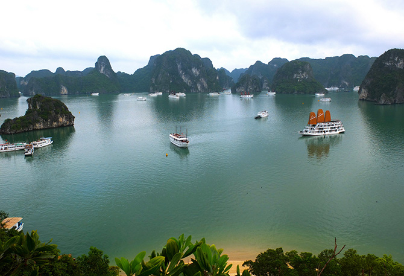

Vịnh Hạ Long
Vịnh Hạ Long – được Unesco nhiều lần công nhận là di sản thiên nhiên của thế giới với hàng nghìn hòn đảo được làm nên bởi tạo hoá kỳ vĩ và sống động. Vịnh Hạ Long có phong cảnh tuyệt đẹp nên nơi đây là một điểm du lịch rất hấp dẫn với du khách trong nước và quốc tế. Vịnh Hạ Long là một di sản độc đáo bởi địa danh này chứa đựng những dấu tích quan trọng trong quá trình hình thành và phát triển lịch sử trái đất, là cái nôi cư trú của người Việt cổ, đồng thời là tác phẩm nghệ thuật tạo hình vĩ đại của thiên nhiên với sự hiện diện của hàng nghìn đảo đá muôn hình vạn trạng, với nhiều hang động kỳ thú quần tụ thành một thế giới vừa sinh động vừa huyền bí. Bên cạnh đó, vịnh Hạ Long còn là nơi tập trung đa dạng sinh học cao với những hệ sinh thái điển hình cùng với hàng nghìn loài động thực vật vô cùng phong phú, đa dạng. Nơi đây còn gắn liền với những giá trị văn hóa – lịch sử hào hùng của dân tộc.
Vịnh Hạ Long nổi bật với hệ thống đảo đá và hang động tuyệt đẹp. Đảo ở Hạ Long có hai dạng là đảo đá vôi và đảo phiến thạch, tập trung ở hai vùng chính là vùng phía đông nam vịnh Bái Tử Long và vùng phía tây nam vịnh Hạ Long. Đây là hình ảnh cổ xưa nhất của địa hình có tuổi kiến tạo địa chất từ 250 – 280 triệu năm, là kết quả của quá trình vận động nâng lên, hạ xuống nhiều lần từ lục địa thành trũng biển. Quá trình Carxto bào mòn, phong hoá gần như hoàn toàn tạo ra một Hạ Long độc nhất vô nhị trên thế giới. Hàng trăm đảo đá, mỗi đảo mang một hình dáng khác nhau hết sức sinh động: hòn Đầu Người, hòn Rồng, hòn Lã Vọng, hòn Cánh Buồm, hòn Gà Chọi, hòn Lư Hương… Tiềm ẩn trong lòng các đảo đá ấy là những hang động tuyệt đẹp gắn với nhiều truyền thuyết thần kỳ như động Thiên Cung, hang Đầu Gỗ, hang Sửng Sốt, hang Trinh Nữ, động Tam Cung… Đó thực sự là những lâu đài của tạo hoá giữa chốn trần gian. Từ xưa, Hạ Long đã được đại thi hào dân tộc Nguyễn Trãi mệnh danh là “kỳ quan đất dựng giữa trời cao”